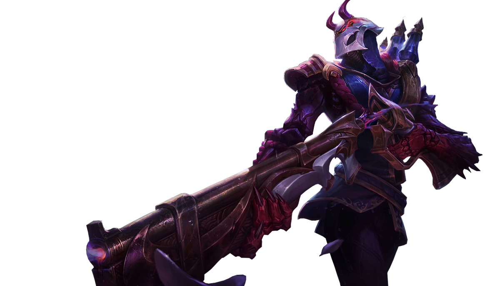

Bemutatkozó
Nevem: Hegedűs Klaudia Adrienn
Születési idő,hely: 2002. október 25. Budapest
Jelenlegi lakhely: Pilis
Jelenlegi iskolám: BMSZC Neumann János Számítástechnikai Szakgimnáziuma
Instagramm

Rólam röviden
16 éves vagyok, Budapesten nőttem fel, de 2 éve Pilisre költöztem. Van 3 kutyám akiket imádok.
Van egy "kis"testvérem, aki egy fejjel nagyobb nálam. 13 éves, Kevinnek hívják.
Szabadidőmben barátaimmal vagyok vagy játszok velük.
Legtöbbször League of Legends-el játszok, 2 éve kezdtem el, Lux OTP és Jhin main vagyok.
Szereket sportolni, bár korlátozva vagyok benne. 3 évig jártam táncolni, amit nagyon imádtam.